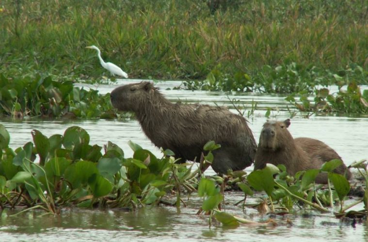
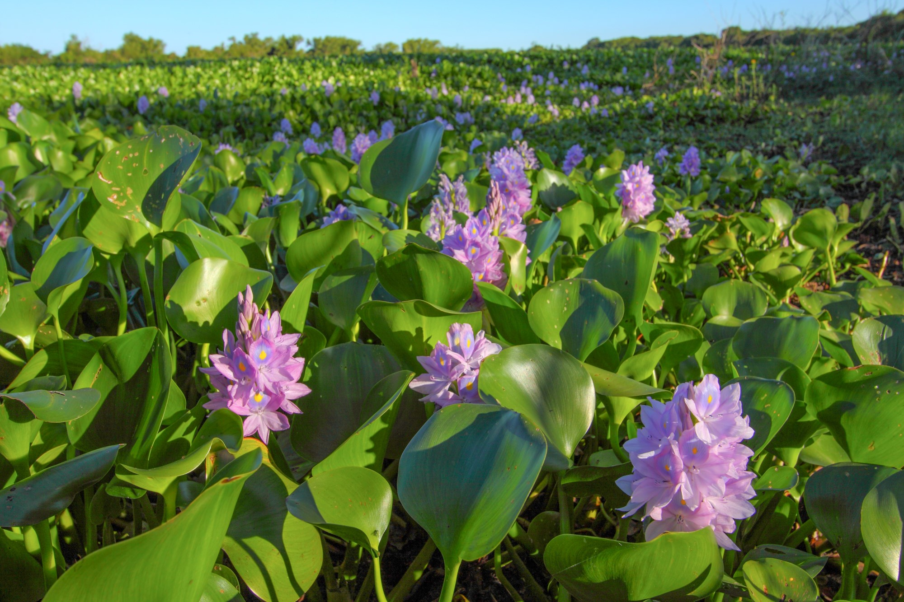

Fauna
Entre los mamíferos, pueden encontrarse coipos (Myocastor coypus), carpinchos (Hydrochaeris hydrochaeris), cuises (Cavia aperea) y lobitos de río (Lontra longicaudis). Entre los reptiles,están el yacaré ñato (Caiman latirostris), yacaré negro (Caiman yacare), curiyú (Eunectes notaeus), ñacaniná (Hydrodinastes gigas) y tortugas de río (Phrynops hilarii y Trachemys scripta) (Burkart, 1999; Bó, 2006; Biasatti et al., 2016). La gran diversidad de peces incluye más de 200 especies.Son comunes el dorado (Salminus brasiliensis) y surubíes (Pseudoplatystoma corruscans y P. fasciatum).
Flora
En las franjas ribereñas, sobre los albardones pueden encontrarse alisales, sauzales o bosques insulares mixtos. El aliso de río (Tessaria integrifolia) es una especie pionera, que se desarrolla en los bancos de arena en formación; generalmente en conjunto con la chilca (Baccharis salicifolia). El aliso contribuye a la consolidación del suelo ya que presenta la capacidad de retener sedimentos. Sobre suelos medianamente consolidado, se desarrollan comunidades de sauces (Salix humboldtiana) las cuales contribuyen a la consolidación de los bancos de arena.
